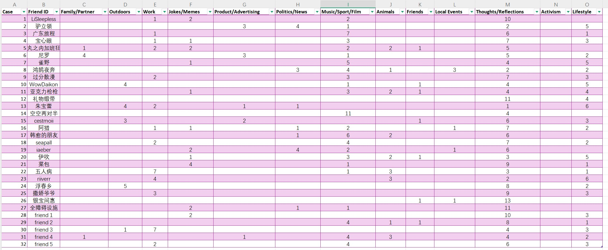

This week, I selected thirty-two accounts and their latest 15 posts from the influencers and friends who I follow on the Internet as data to refer to and study the identity and content of people on social media. The social media I collect is Weibo, a platform similar to Twitter. Because it has text attributes. Unlike Xiaohongshu and TikTok that every post must at least one pictures or videos, it can post text casually. Therefore, it can be seen from the data I collected that people often choose to post their ideas and thoughtson this platform.
During the collection process, I developed some reflections on the data. First, I believe that data does not represent a complete person. It is merely a part of the self that people present online and may even contain elements of performance or concealment. Second, I believe that data cannot be arbitrarily categorized. A single piece of content could be considered as being about friends, or it could also be considered as being about lifestyle. My own thinking plays a role in making such distinctions. Finally, data collection may infringe on people's privacy. Therefore, for my friends' accounts I did not use their IDs but instead just "friend".
Here is the screenshot of my data. Please excuse that I used Chinese for some of the influencers' IDs.
